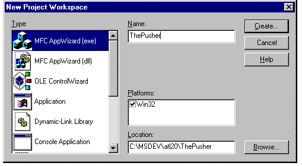
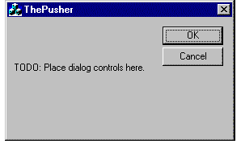
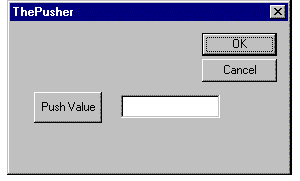
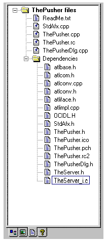

|
| ||
|
| ||
Steve Robinson and Alex Krasilshchikov
Panther Software
The first client application we are going to build will be ThePusher. Recall that in our server application we have functions called HelloWorld and AcceptNewValue. ThePusher application is going to be a simple dialog-based application whose purpose is to connect with and send data to TheServer. Through ThePusher, you are going to learn how easy it is to create COM client applications and call functions in COM interfaces, and even DCOM servers, since it is all the same.
Let's start by creating a new application with Visual C++. For convenience, let's create ThePusher in a folder adjacent to TheServer application. Start a new project workspace and fill out the New Project Workspace dialog box so that it resembles the following:

// Initialize OLE libraries
if (!AfxOleInit())
{
AfxMessageBox(IDP_OLE_INIT_FAILED);
return FALSE;
}


Before we build the connection to TheServer, let's add another variable that will maintain the former value passed to the server. In ThePusherDlg.h, add a long member variable called m_lFormerValue, and, since we practice safe programming, make sure you initialize it to 0 in the constructor. Now we are ready to add the connectivity to TheServer.
Open stdafx.cpp and add the line #include <atlimpl.cpp> immediately after #include "stdafx.h". The majority of the ATL COM library is implemented by atlimpl.cpp. At this point, all that essentially matters is that Microsoft has done a lot of work for you. Open stdafx.h and at the bottom of the file add the following lines:
//declaration files for ATL base classes #include <atlbase.h> //external linkage for CComModule extern CComModule _Module; //ActiveX Template Library include #include <atlcom.h> //idl declaration file for the server #include "..\TheServer\TheServer.h"
Since you have most likely seen header files before, the only unfamiliar line should be the CComModule, which has external linkage. CComModule implements a COM server module, thus allowing a client to access the server's components. CComModule supports both in-process servers (.DLL files) and out-of-process servers (.EXE files), whether they are local or remote servers.
If you are programming in Windows NT 4.0 or later and have installed Visual C++ Patch 4.2b, make sure you add the line #define _WIN32_WINNT 0x0400 at the top of stdafx.h. (This is a new definition that you may use one day if you explore threading issues.) Your stdafx.h file should look very similar to the one in the sample.
Open ThePusher.cpp which implements our application class. Add the following lines immediately after the _DEBUG defines:
#define IID_DEFINED #include "..\TheServer\TheServer_i.c" CComModule _Module;
The beginning of ThePusher.cpp file should look like this:
#include "stdafx.h" #include "ThePusher.h" #include "ThePusherDlg.h" #ifdef _DEBUG #define new DEBUG_NEW #undef THIS_FILE static char THIS_FILE[] = __FILE__; #endif #define IID_DEFINED #include "..\TheServer\TheServer_i.c" CComModule _Module;
TheServer_i.c defines IID struct and constants that are used to access our interface. If you take a look at the IID struct you may realize that it is the same as the registry format. In fact, CLSID is defined as type IID, which is the format you see in the registry! If you ever wondered what the registry format structure was, here it is! For example, {0x5E603BF3,0x9823,0x11D0,{0xA4,0xF8,0x00,0x00,0xB4,0x53,0x3E,0xC 9}} is the IID of our ITheServerComObject interface. This consists of a long, followed by two shorts and a character array. If you want, you can enter the first long or the two shorts into a calculator and change them to decimal formats, just to prove that they are what they should be.
At this point, re-scan all dependencies and you should see new files in the project workspace window. They are: atlbase.h, atlcom.h, atlimpl.cpp, TheServer.h, and TheServer_i.c. Your Project Workspace window should look like the one below:

Rebuild your entire project to make sure everything builds cleanly, and then we'll start adding code for connecting to the COM object in TheServer.
The first thing we need to do is create a member variable that will hold a pointer to an interface in TheServer's COM object. Open the file ThePusherDlg.h and add the following line:
CComPtr<ITheServerComObject> m_pITheServerObject;
CComPtr is a template class (type: parameterized) for managing COM interface pointers. CComPtr automatically performs reference counting and uses overloaded operators to handle related operations so you don't have to do anything. We use ITheServerComObject as the template type, since that is the name of the interface that will be created. ITheServerComObject is declared in TheServer.h, which is included in stdafx.h, so there are no additional files to include or forward-class declarations to make in this file or in the implementation file, ThePusherDlg.cpp. Open ThePusherDlg.cpp and, in the constructor, initialize the variable we just added to our class declaration file as NULLagain, because we are practicing safe software development. Your constructor should appear identical to this:
CThePusherDlg::CThePusherDlg(CWnd* pParent /*=NULL*/)
: CDialog(CThePusherDlg::IDD, pParent)
{
//{{AFX_DATA_INIT(CThePusherDlg)
m_lValueToPush = 0;
//}}AFX_DATA_INIT
// Note that LoadIcon does not require a
// subsequent DestroyIcon in Win32
m_hIcon = AfxGetApp()->LoadIcon(IDR_MAINFRAME);
m_lFormerValue = 0;
m_pITheServerObject = NULL;
}
In the dialog's OnInitDialog function we will initialize our interface pointer. At the beginning of the function, after calling CDialog::OnInitDialog() add the following lines:
//call the world-famous CoCreateInstance…
HRESULT hRes = ::CoCreateInstance(CLSID_TheServerComObject,
NULL,
CLSCTX_ALL,
IID_ITheServerComObject,
(void**)&m_pITheServerObject);
ASSERT(hRes == S_OK);
_ASSERTE(m_pITheServerObject != NULL);
CoCreateInstance is a Win32-based function that creates an uninitialized objectof a specified type. It performs two basic functions, CoGetClassObject, which initializes a class factory (IClassFactory), and IClassFactory's CreateInstance method. If you want to create only one instance of your interface, use CoCreateInstance, or CoCreateInstanceEx, which is CoCreateInstance's big brother. If you need to create multiple interfaces of a specified type, use CoGetClassObject and CreateInstance. The parameters of CoCreateInstance are:
If CoCreateInstance is successful, it returns S_OK and sets our pointer. If it is unsuccessful, it returns something other than S_OK (most of the error values are defined in winerrors.h). Also, if CoCreateInstance is unsuccessful, it sets our pointer to interface member to NULL. If you didn't select OLE Automation in AppWizard when you created the project, the HRESULT returned will be 800401F0L, which is CO_E_NOTINITIALIZED, implying that the OLE libraries have not been loaded. (This is a very common occurrence when you are speeding through samples, as we actually did at Panther when we first wrote this sample.)
Just to prove that our interface exists and works properly, let's add the following two lines immediately after our assert functions.
hRes = m_pITheServerObject->HelloWorld(); VERIFY(SUCCEEDED(hRes));
We call the HelloWorld method directly from our interface pointer. This example demonstrates how easy it is to call methods from pointers to interfaces. Since HelloWorld does nothing more than return S_OK, we have a great opportunity to use the SUCCEEDED macro. This macro is defined in winerrors.h as:
#define SUCCEEDED(Status) ((HRESULT)(Status) >= 0)
You should always use the SUCCEEDED macro.
Now we are ready to do some real work with our interface. In the OnPushValue method, type the code exactly as follows:
UpdateData();
ASSERT(m_pITheServerObject != NULL);
if(m_pITheServerObject != NULL)
{
HRESULT hRes;
hRes =
m_pITheServerObject->AcceptNewValue(m_lValueToPush,
&m_lFormerValue);
if(SUCCEEDED(hRes))
{
TRACE("The current value is: %d\n",m_lValueToPush);
TRACE("The former value is: %d\n",m_lFormerValue);
}
else
{
ASSERT(FALSE);
}
}
A quick review of the code shows that we will pass a new value to our server (the value is entered into the dialog box) and get the old value (current value) from the server. Running the program shows the results in the debug window. Compile, create links, and run the program. Before you exit, don't forget to congratulate yourself on the completion of your first out-of-process COM application!
Did you find this material useful? Gripes? Compliments? Suggestions for other articles? Write us!
© 1999 Microsoft Corporation. All rights reserved. Terms of use.